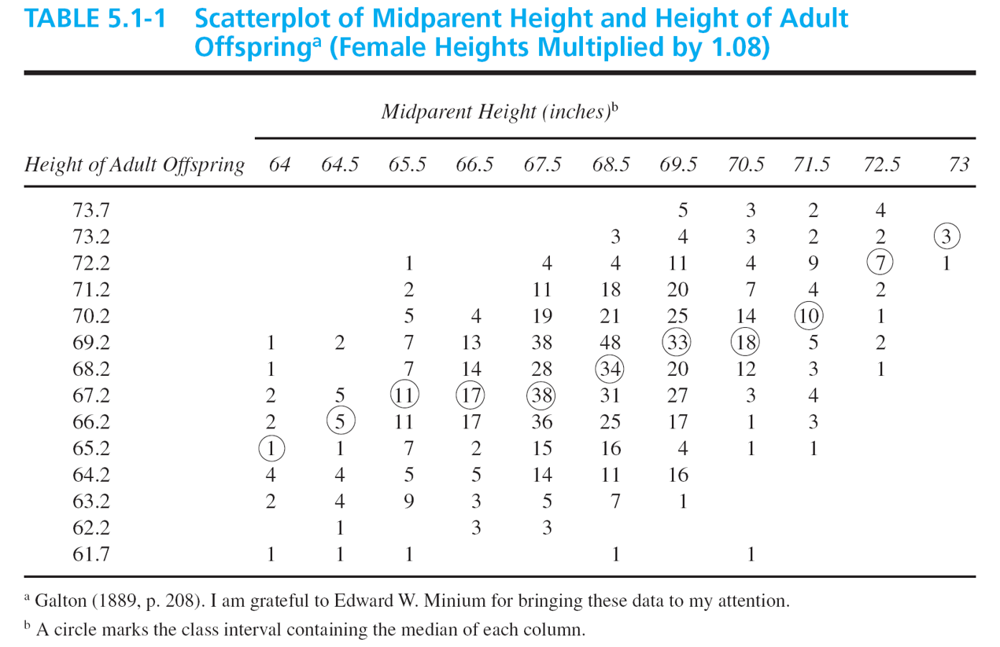
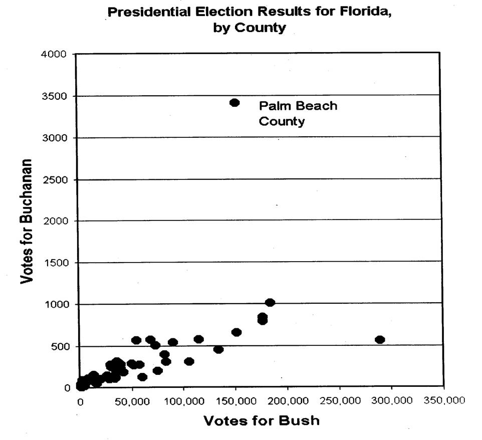
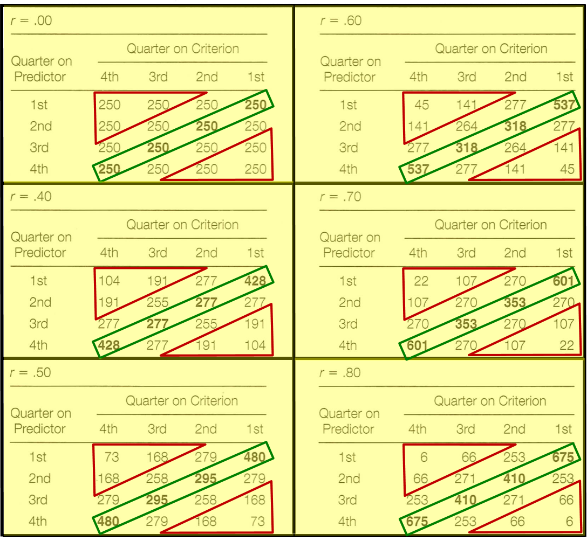
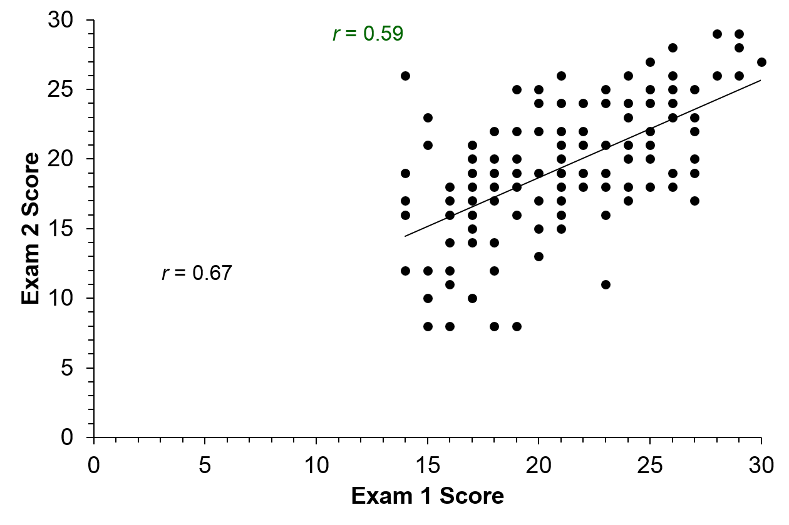
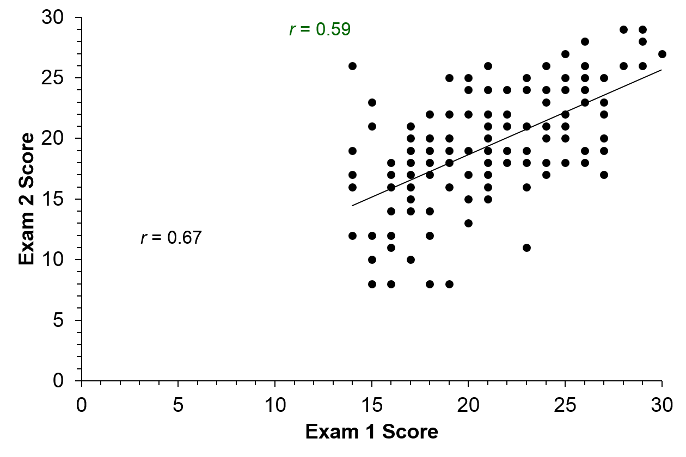

Up to now, we have primarily focused on statistics for single variables
We will now shift to discuss how to quantify and explore the relationship between two variables.
To display the relationship between two variables, could use a bivariate frequency distribution or a scatterplot.
Bivariate Frequency Distribution

Scatterplot
plot of chunk eruptions
plot of chunk eruptionslinear
Correlation 2
The correlation gives us a measure to describe the relationship between two variables.
The form of the relationship
The direction of the relationship
The strength of the relationship
The pearson product-moment correlation coefficient (correlation) describes the amount of linear relationship between two variables.
Notation:
Sample: \(r\)
Population: \(\rho\)
Correlation 3
Correlations can be either positive or negative:
Positive: Effort and Achievement -- People who expend more effort tend to achieve more.
Negative: Cholesterol level and life expectancy -- People with lower cholesterol levels tend to live longer.
A correlation of 1 represents a perfect positive relationship.
Example: Annual precipitation in inches and annual precipitation in centimeters.
A correlation of -1 represents a perfect negative relationship.
Example: Number of days in class and number of days absent.
A correlation of 0 represents no relationship.
Example: height and last digit of social security number.
Examples
plot of chunk height
plot of chunk ozone
Real world Examples
Twins
Real World Example 2

Florida Election
Real World Example 2 cont.
ballot
Guessing Correlations
http://istics.net/stat/Correlations/
Correlation Formula
\[ r = \frac{\mbox{degree to which X and Y vary together}}{\mbox{degree to which X and Y vary separately}} \]
\[ r = \frac{s_{XY}}{s_{X}s_{Y}} = \frac{\sum(X-\bar{X})(Y-\bar{Y})}{s_{X}s_{Y}}*\frac{1}{n} \]
where \(s_{XY} = \frac{\sum(X-\bar{X})(Y-\bar{Y})}{n}\) is the covariance and \(s_{X}\) and \(s_{Y}\) are the standard deviations of the \(X\) and \(Y\) respectively.
\[ r = \frac{\sum z_{x} z_{y}}{n} \]
Calculating the Correlation
plot of chunk faithful2
Correlation Formula 2
Formula for raw scores: \[ r = \frac{\sum (X - \bar{X})(Y- \bar{Y})}{(n)s_{x}s_{y}} \]\[ \rho = \frac{\sum (X - \mu_{X})(Y- \mu_{Y})}{(N)\sigma_{x}\sigma_{y}} \]
Correlation Properties
\(r\) ranges from -1 (perfect negative relationship) to +1 (perfect positive relationship)
\(r = 0\) when there is no linear relationship between the variables.
The closer \(r\) is to +1 or -1, the stronger the relationship
For example, \(r = -0.7\) is stronger than \(r = 0.49\).
Changes in the scale are not uniform.
For example, a change from \(r = 0.4\) does not represent half the relationship as \(r = 0.8\)
Correlation Properties 2
Linear transformations do not impact the correlation.
Example, the corelation between the temperatures in Boston and New York would be identical on Fahrenheit or Celsius scales
Flipping the X and Y variables does not change the correlation.
Perfect Linearity
Perfect linearity does not always imply perfect correlation.
Non-linear Trends
Remember that the correlation we have discussed measures the linear relationship, not non-linear.
Interpretation of the Correlation
Assuming linearity exists, what does \(r = 0.75\) mean?
Interpret \(r\) in an absolute sense (can be troublesome out of context):
\(| r | > 0.75\); strong correlation
\(| r | > 0.3\); medium correlation
\(| r | < 0.3\); weak correlation
Interpret in a relative sense:
Parallel test forms (Form A -- Form B); \(r = 0.75\) is low
ACT to Freshman GPA; \(r = 0.75\) is high
Interpretation of the Correlation 2
\(r^2\) is an indication of the amount of variability one variable explains in the other variable.
Example: \(r = 0.75\), \(r^2 = 0.56\); 56% of the variation in Y is explained by X.
\(r\) as an index of prediction accuracy.

Correlation is not Causation
We find a relationship between X and Y
This relationship may be that X causes Y
Or it could be that Y causes X
It could be that a third variable causes both X and Y
Most likely, there is a complex web of variables that are at play.
Confounding
Confounding is when Y is caused by X and a third variable (but the third variable is not related to X). Therefore, the effect of X is confounded with a third variables


 
